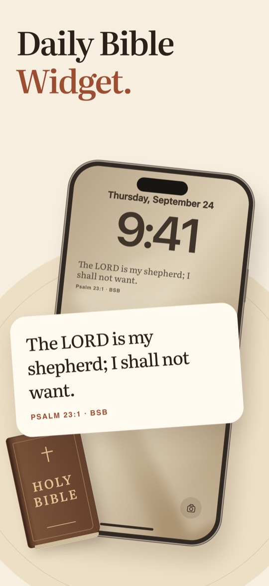
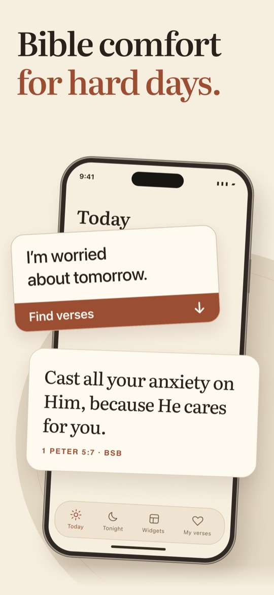
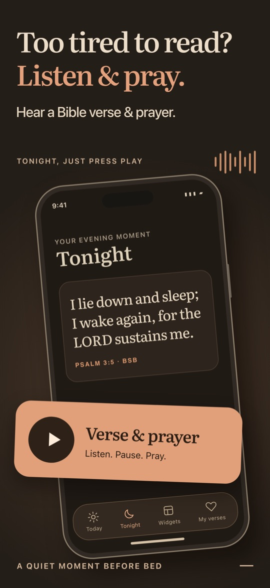
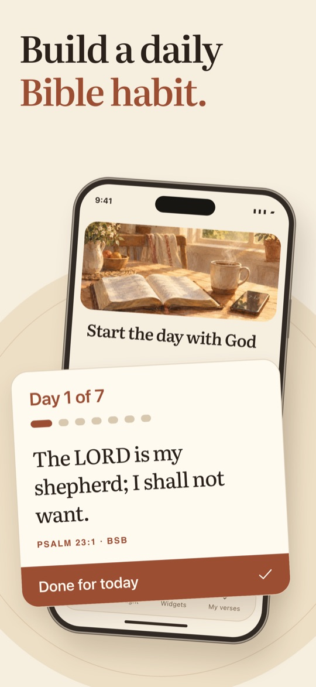
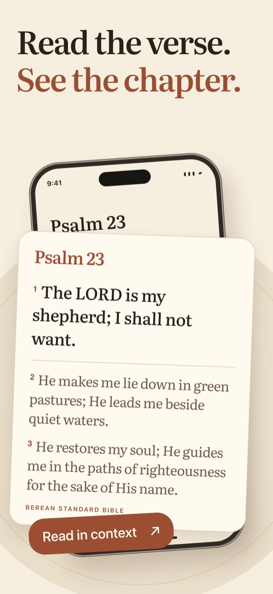
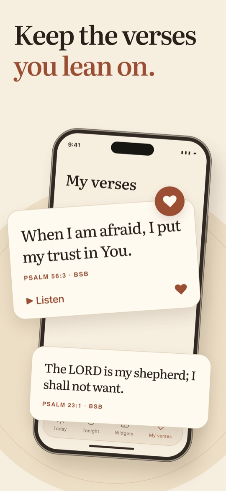
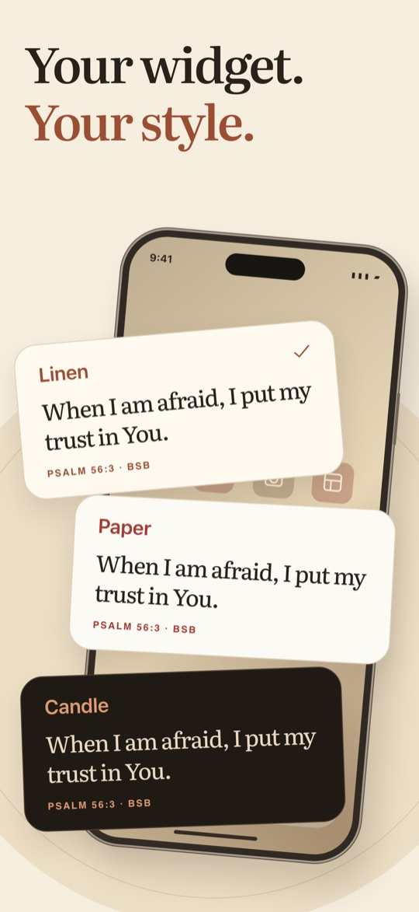
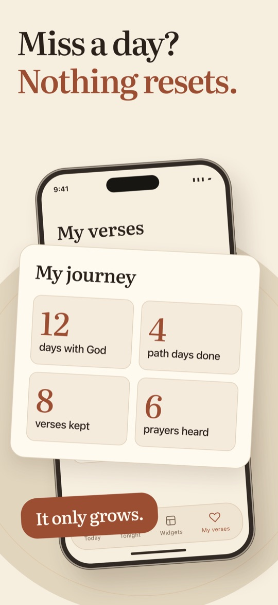

A Bible verse for how you feel — on the screen you already check.
A Bible verse widget for iPhone: your Lock Screen, Home Screen and StandBy show Scripture chosen for what's on your heart and the time of day.
Download on the App StoreiPhone · iOS 17 or later · English








“So do not be afraid; you are worth more than many sparrows.”Matthew 10:31 · BSB
Every verse is the Berean Standard Bible, word for word. Every prayer comes from the Book of Common Prayer. Two Sparrows never writes Scripture: when you describe what's on your heart, it only chooses verses from the Bible. No ads, no social feed, one notification a day at most — and only if you ask for it.
All of Two Sparrows — widgets, verses for how you feel, paths, listening and every style.
Subscriptions renew automatically unless cancelled at least 24 hours before the end of the current period. Cancel anytime in iOS Settings → your name → Subscriptions; cancel during the trial and you pay nothing. The free trial is for new subscribers. Prices may vary by country and are shown in the app before you subscribe. After Pro ends, the verse of the day stays free in the app and on your widget.
No account and no sign-up. Your feelings, saved verses and settings stay on your iPhone. If you choose to use your own words, the text is used only to pick verses and is not stored by us. No ads, no tracking. Read the Privacy Policy.
Two Sparrows offers Scripture and prayer for encouragement; it is not crisis or medical care. If you are in danger or thinking about suicide, call or text 988 (US) or your local emergency number.